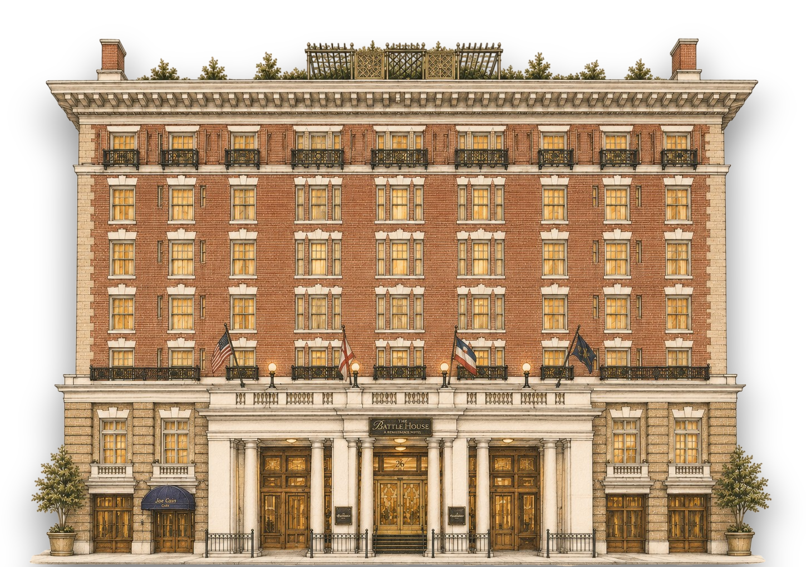

Rooftop
Pool, Driving Range, Tennis & Pickleball
Spend time by the rooftop pool, take a swing at the rooftop driving range stations, or play a little tennis and pickleball on the rooftop courts.
Stay With Us
We have reserved a room block at The Battle House Hotel for guests who would like to stay at the reception venue and be close to the weekend festivities.

Hotel
26 North Royal St, Mobile, AL 36602
The Battle House will serve as the main hotel for the wedding weekend. Cocktail hour and the reception will take place at The Battle House on Saturday evening, making it the most convenient option for guests who would like to stay on-site.
A limited number of rooms have been reserved for Friday, April 16 through Sunday, April 18, 2027.
At The Battle House
For guests staying at The Battle House, there is plenty to enjoy.
Rooftop
Spend time by the rooftop pool, take a swing at the rooftop driving range stations, or play a little tennis and pickleball on the rooftop courts.
Spa & Salon
The Battle House offers a European spa, along with in-house hair and nail salons for anyone hoping to relax, refresh, or get wedding-weekend ready.
Dining
The Trellis Room serves Italian dishes, Joe Cain Cafe offers American comfort food, and Royal Street Tavern is a spot for shareable plates.
Downtown
The hotel is located in the heart of downtown Mobile's walkable entertainment district, with 60+ restaurants and bars, shops, parks, tours, a riverboat cruise, and more nearby.
Venue History
The present Battle House site once served as General Andrew Jackson's military headquarters during the War of 1812. Before the Battle House existed, the site had already hosted earlier hotels, including the Franklin House and Waverly Hotel.
James Battle and members of the Battle family opened the first Battle House Hotel in 1852 as a four-story brick hotel with a two-level cast-iron gallery.
Since opening in 1852, The Battle House has welcomed Henry Clay, Winfield Scott, Stephen A. Douglas, Jefferson Davis, Oscar Wilde, Elvis Presley, President Millard Fillmore, and President Woodrow Wilson.
Douglas was at the Battle House on Election Day in 1860, the election Lincoln won just before the country descended into the Civil War.
President Woodrow Wilson visited the hotel in 1913 shortly after his inauguration. After a presidential breakfast at the Battle House, he went to the nearby Lyric Theatre and made his famous statement that the United States would "never again seek one added foot of territory by conquest."